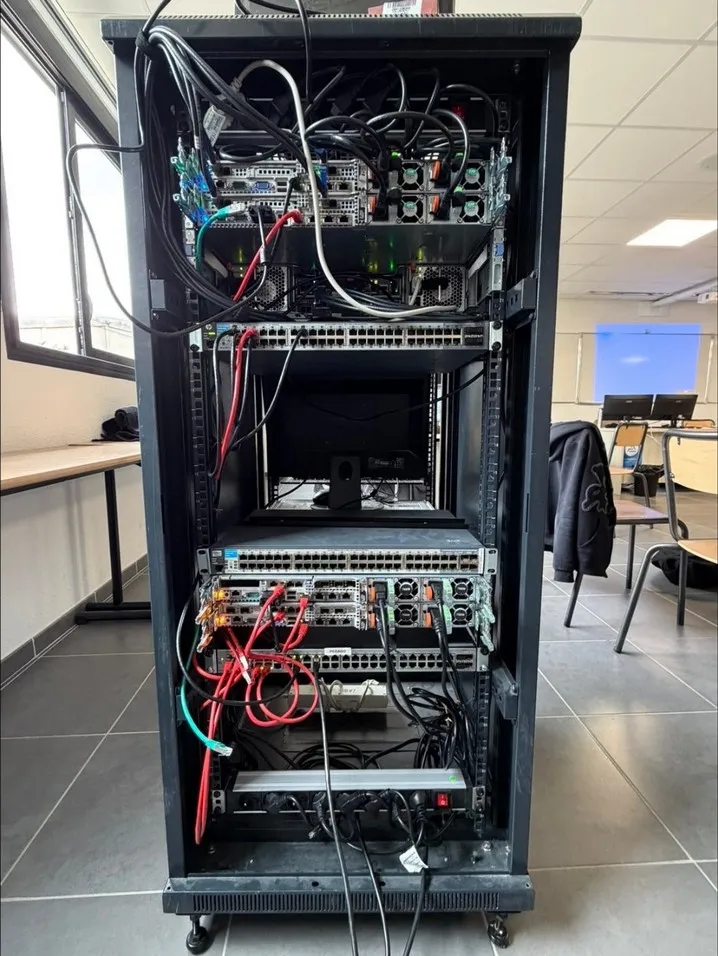
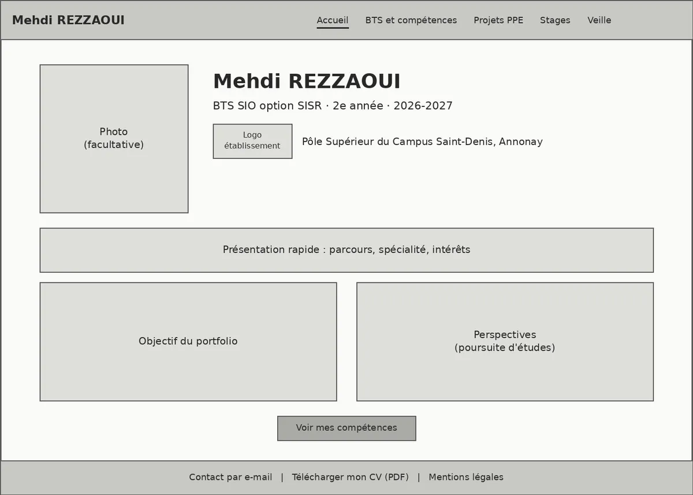
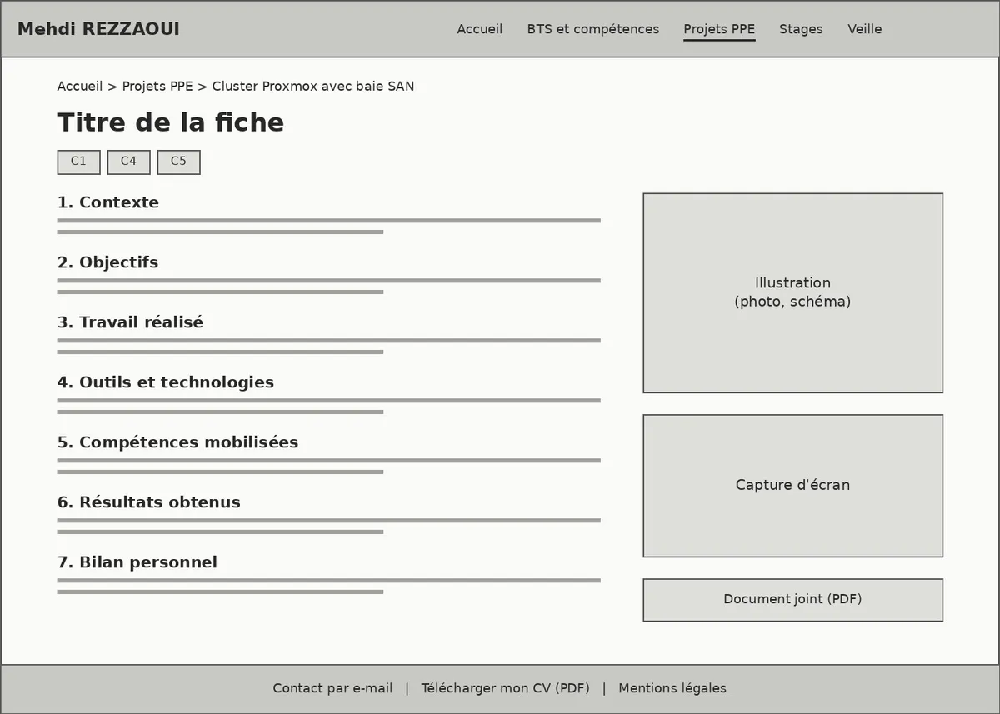
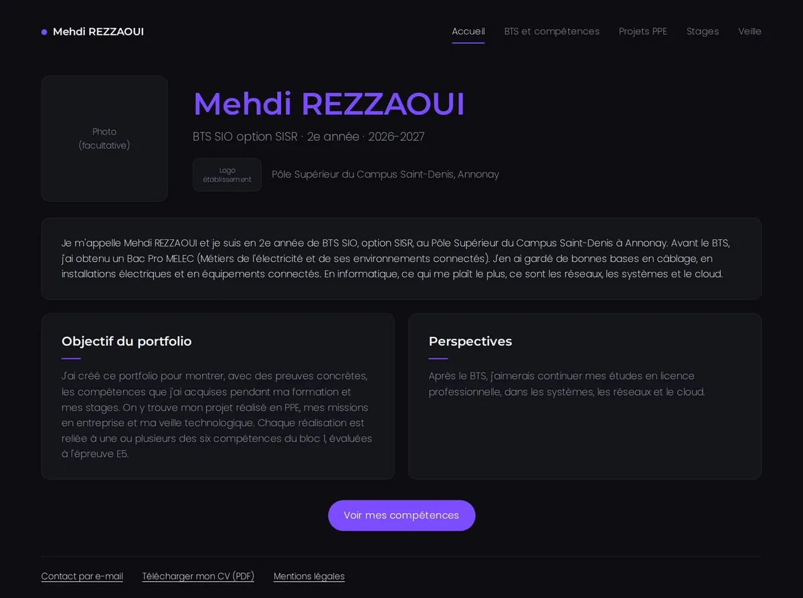

Monter un cluster Proxmox avec une baie SAN
PPE de 1re année, de mars à mai 2026
Projet réalisé en équipe de quatre étudiants : deux serveurs Proxmox VE réunis en cluster, avec un stockage partagé en RAID 5 sur une baie SAN et le multipath.
C1 C4 C5
Les projets que j'ai réalisés en BTS SIO. Chaque fiche suit le même plan, du contexte jusqu'à mon bilan personnel.
PPE de 1re année, de mars à mai 2026
Projet réalisé en équipe de quatre étudiants : deux serveurs Proxmox VE réunis en cluster, avec un stockage partagé en RAID 5 sur une baie SAN et le multipath.
C1 C4 C5
Projet de 2e année, 2026-2027, seul
La conception et le développement de ce site, en HTML et CSS sans framework, puis sa mise en ligne sur GitHub Pages.
C3 C4 C6
Les compétences de tous mes projets et de mes stages sont regroupées dans le tableau de synthèse.
PPE de 1re année, mars à mai 2026
Ce projet nous a été donné comme sujet de PPE par notre enseignant, pour nous faire pratiquer la virtualisation et le stockage partagé. Je l'ai réalisé en équipe avec trois autres étudiants de BTS SIO, Muhamed-Ali Unlu, Hamza Doumi et Tristan Dos Santos, de mars à mai 2026.
Nous avions à notre disposition :
Notre principale contrainte était le temps. Le matériel avait aussi déjà servi : la baie SAN contenait encore d'anciennes configurations qu'il a fallu supprimer.
Nous devions créer un cluster Proxmox avec les deux serveurs, configurer la baie SAN MD3420 pour qu'elle serve de stockage partagé, et assurer la redondance et la haute disponibilité.
La finalité : avoir une infrastructure prête à accueillir des machines virtuelles, qui continue de fonctionner si un disque ou un lien tombe en panne.

Nous avons préparé le matériel, installé les serveurs et la baie SAN dans la baie de brassage, fait le câblage réseau et le branchement de l'alimentation, connecté les switches, puis rangé les câbles.
Nous avons installé Proxmox VE 9.1 sur les deux serveurs à partir d'une clé USB bootable créée avec Rufus, puis configuré le réseau (adresses IP des serveurs et de leurs interfaces iDRAC) et mis le système à jour. Nous avons ensuite créé le cluster avec la commande pvecm create, ajouté le 2e serveur avec pvecm add et vérifié le résultat avec pvecm status. Les adresses et les noms des serveurs sont masqués ci-dessous.
# Accès à l'interface web d'administration
https://<adresse-du-serveur>:8006
# Mise à jour du système
apt update && apt full-upgrade
# Sur le premier serveur : création du cluster
pvecm create <nom-du-cluster>
# Sur le second serveur : ajout au cluster
pvecm add <adresse-du-premier-serveur>
# Vérification de l'état du cluster
pvecm statusNous avons configuré la baie SAN avec le logiciel Dell PowerVault Modular Disk Storage Manager. Nous avons paramétré l'adresse de gestion, supprimé les anciennes configurations RAID, puis créé deux groupes RAID 5, nommés RAID5_10k (5 disques) et RAID5_15k (10 disques). Le RAID 5 permet de perdre un disque sans perdre de données. Nous avons ensuite déclaré les deux serveurs dans la baie, dans un groupe d'hôtes, pour leur donner accès au stockage.


Nous avons mis en place le multipath avec multipath-tools, pour que chaque serveur ait plusieurs chemins vers le stockage. Si un lien tombe, l'autre prend le relais. Les deux volumes obtenus s'appellent mpath10 et mpath15. Nous avons ensuite créé un groupe de volumes LVM sur chacun. Les identifiants des disques (WWID) sont masqués ci-dessous.
# Installation de l'outil
apt update
apt install multipath-tools
# Récupération de l'identifiant (WWID) de chaque disque de la baie
/lib/udev/scsi_id -g -u -d /dev/sda
/lib/udev/scsi_id -g -u -d /dev/sdd
# Ajout des deux disques au multipath
multipath -a <WWID-du-volume-10K>
multipath -a <WWID-du-volume-15K>Dans le fichier /etc/multipath.conf, on donne un nom simple à chaque volume :
multipaths {
multipath {
wwid "<WWID-du-volume-10K>"
alias mpath10
}
multipath {
wwid "<WWID-du-volume-15K>"
alias mpath15
}
}# Rechargement de la configuration et vérification des chemins
multipath -r
multipath -ll
# Création des volumes physiques et des groupes de volumes LVM
pvcreate /dev/mapper/mpath10
vgcreate mpath10vg /dev/mapper/mpath10
pvcreate /dev/mapper/mpath15
vgcreate mpath15vg /dev/mapper/mpath15
# Vérification
pvscan --cachepvecm status (cluster) et multipath -ll (stockage).Voir le tableau de synthèse des compétences.
Ce qui fonctionne : le cluster Proxmox sur les deux serveurs, la baie SAN configurée avec deux volumes RAID 5, le stockage partagé accessible par les deux serveurs et le multipath. L'infrastructure est prête pour la virtualisation.
Ce que nous n'avons pas eu le temps de faire : déployer les machines virtuelles.
Livrables : la documentation d'installation du projet et le diaporama de présentation du projet (non publié sur le site).
Avec ce projet, j'ai appris à installer l'hyperviseur Proxmox et j'ai compris comment fonctionnent une baie SAN, le RAID 5 et le multipath. J'ai aussi appris à travailler en équipe, avec une vraie répartition des tâches, et à rédiger la documentation d'un projet.
Ma première difficulté a été la création du cluster, c'est-à-dire relier les deux serveurs avec les commandes pvecm. J'ai fini par y arriver en lisant la documentation de Proxmox, en cherchant avec mes coéquipiers, en demandant de l'aide à l'enseignant et en faisant plusieurs essais.
Ma deuxième difficulté a été la documentation : il fallait garder une trace de chaque étape pendant que le projet avançait. J'ai pris des notes et des captures d'écran au fur et à mesure. J'ai partagé la rédaction avec Tristan (lui pour la baie SAN, moi pour Proxmox), puis j'ai tout remis au propre à la fin.
L'équipe a aussi rencontré d'autres difficultés :
Projet de 2e année, 2026-2027
Le portfolio est le support de l'épreuve E5 du BTS SIO, « Support et mise à disposition de services informatiques ». Il est aussi évalué en cours. Je réalise ce projet seul, pour un client : mon enseignant, M. Armand, qui valide chaque livraison.
Mon cahier des charges du 25/09/2026 fixe plusieurs contraintes :
Le but est de montrer, avec des preuves concrètes, les compétences que j'ai acquises pendant ma formation et mes stages. Le site doit présenter :
J'ai suivi trois étapes : le cahier des charges, puis le dossier de conception, puis le développement, page par page.
Dans ce dossier, j'ai défini l'arborescence du site, dessiné les maquettes des pages, choisi la charte graphique et rédigé tous les textes. Les maquettes sont volontairement en gris, pour me concentrer sur l'emplacement des éléments.


Pendant la conception, j'ai fait évoluer les couleurs prévues dans le cahier des charges : le fond bleu nuit est devenu presque noir et le violet a remplacé le bleu. Je l'ai signalé dans le dossier comme une demande de changement.

J'ai développé le site page par page, en commençant par la version mobile (« mobile first »). Chaque modification est enregistrée avec Git, et chaque livraison reçoit une étiquette (v1, v2, v3). Les polices sont hébergées avec le site, pour ne contacter aucun service externe :
@font-face {
font-family: "Poppins";
src: url("../fonts/poppins-latin-300-normal.woff2") format("woff2");
font-weight: 300;
font-display: swap;
}Les cartes sont placées avec une grille CSS qui s'adapte seule à la largeur de l'écran :
.grille {
display: grid;
grid-template-columns: repeat(auto-fit, minmax(250px, 1fr));
gap: 1.5rem;
}Mon cahier des charges prévoyait un peu de JavaScript, pour le menu sur mobile et pour un filtre des projets par compétence. J'ai finalement choisi de ne pas en utiliser, parce que je ne le maîtrise pas assez pour l'expliquer. Sur mobile, les liens du menu passent simplement à la ligne, et les compétences de chaque projet sont affichées sur sa carte et dans le tableau de synthèse.
Mon planning fixe les jalons suivants :
Mon diagramme de GANTT prévoit aussi une actualité de veille par mois : les 16/10/2026, 27/11/2026, 18/12/2026, 29/01/2027 et 26/02/2027.
Voir le tableau de synthèse des compétences.
Le résultat, c'est ce site : six pages, un affichage adapté au smartphone, à la tablette et à l'ordinateur, et un tableau de synthèse qui relie chaque réalisation à ses compétences.
Livrables : le cahier des charges, le dossier de conception, puis chaque version du site (V1 en archive .zip, puis le site en ligne pour la V2 et la V3).
Ce projet est en cours : je compléterai ce bilan à la fin, en V3.
Ce qui a bien marché jusqu'ici : rédiger tous les textes dès le dossier de conception m'a permis de développer les pages beaucoup plus vite.
Les difficultés rencontrées : la police Poppins ExtraLight que j'avais choisie était trop fine sur le fond sombre. Comme je l'avais prévu dans le dossier, je suis passé à Poppins Light. Le violet de la charte n'était pas assez contrasté pour les petits liens : je l'ai gardé pour les boutons et les titres, et j'ai utilisé un violet plus clair pour les liens dans le texte. Il a aussi fallu masquer toutes les informations sensibles de mes documents (adresses IP, identifiants, noms de machines) avant de les publier.